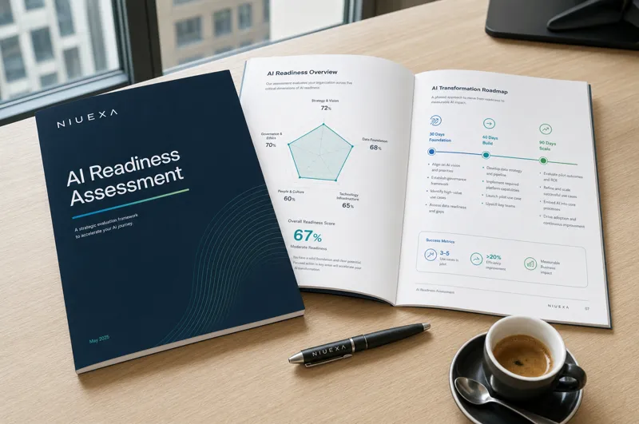

Prima di investire in AI, scopra quali processi meritano davvero attenzione.
L'AI Readiness Assessment per PMI italiane è una valutazione strutturata di processi, dati, competenze e governance. Traduce l'interesse per l'intelligenza artificiale in una roadmap operativa: casi d'uso prioritari, impatto atteso e piano a 30, 60 e 90 giorni.
Il primo colloquio è gratuito e senza impegno. Per CEO, founder, operations manager e team che vogliono passare da esperimenti AI a priorità operative.
Molte aziende partono dal tool. Quelle che ottengono risultati partono dal processo.
ChatGPT, Copilot, automazioni e AI agent producono valore solo quando entrano in un flusso di lavoro chiaro, con una metrica e un owner. L'assessment serve a evitare progetti casuali e a scegliere i casi d'uso dove l'AI può ridurre tempi, errori e colli di bottiglia.
Segnali che è il momento di fare un assessment
- Il team usa l'AI in modo informale, senza linee guida comuni.
- Ci sono molte idee AI ma nessuna priorità condivisa.
- I processi sono ancora basati su email, fogli Excel e copia-incolla.
- Non è chiaro quali dati servano o chi ne sia owner.
- Non esiste una metrica per decidere se un progetto AI funziona.
Le 5 dimensioni della readiness AI
Il framework che usiamo per capire se l'azienda è pronta a portare l'AI nei processi, non solo nei prompt. Sono le stesse cinque dimensioni che ritrova valutate nel report finale.
-
Processi
Workflow ripetitivi, input e output, colli di bottiglia, baseline di tempi e qualità.
-
Dati e conoscenza
Accessibilità, qualità, ownership e documentazione delle fonti interne.
-
Persone e competenze
Uso reale dell'AI, formazione, responsabilità e capacità di verificare gli output.
-
Governance
Privacy, dati sensibili, escalation, controllo qualità e rischio operativo.
-
Metriche e roadmap
Metriche, primi interventi, priorità, impegno richiesto e piano a 30, 60 e 90 giorni.
Come funziona
Un percorso lineare, dal primo contatto alla roadmap condivisa.
Colloquio conoscitivo
Gratuito e senza impegno: obiettivi, contesto e priorità della Sua azienda.
Analisi
Interviste ai referenti e mappatura di processi, dati e strumenti in uso.
Report e opportunity map
Le cinque dimensioni valutate e i casi d'uso ordinati per impatto e fattibilità.
Roadmap condivisa
Piano a 30, 60 e 90 giorni e prossimi passi: formazione, automazioni o AI agent.
Dalla lista di idee AI alla prima automazione misurabile
Nell'assessment usiamo un filtro operativo semplice: non chiediamo solo quale tool usare, ma quale workflow ha abbastanza volume, dati, regole e responsabilità per diventare un progetto AI sostenibile.
Quanto tempo, quante eccezioni e quali errori genera oggi il processo?
Quali passaggi sono ripetitivi, documentati e verificabili da una persona?
Dove servono controllo umano, privacy, escalation e metriche di qualità?
Approfondimento collegato: come portare l'AI dai chatbot isolati ai workflow operativi governati.
Cosa riceve alla fine
Non un documento teorico: una base concreta per decidere cosa fare nei prossimi 30, 60 e 90 giorni.
- AI opportunity map I processi candidati all'AI nella Sua azienda e il valore potenziale di ciascuno.
- Shortlist di casi d'uso Pochi casi d'uso prioritari, valutati per impatto, fattibilità e rischio. Se in un processo l'AI non serve, lo scriviamo.
- Roadmap iniziale I prossimi passi concreti: formazione, automazioni, AI agent o governance.

Chi guida l'assessment
NIUEXA S.R.L. ha sede legale a Torino e un ufficio a Milano, è controllata da Libera Brand Building Group ed è membro di AUSED, l'associazione italiana di CIO e IT manager. Affianca le PMI su formazione, automazione dei processi e agenti AI, con un principio: l'agente propone, la persona decide.
Gregor Maric
Co-fondatore e CEO, Niuexa
Si occupa di automazione dei processi aziendali dal 2012: flussi documentali, RPA e, oggi, agenti AI. In Niuexa guida i progetti di automazione e la formazione.
Roberto Botto
Co-fondatore di Niuexa, CEO di Libera Brand Building Group
Fondatore e CEO di Libera Brand Building Group, con oltre 25 anni di esperienza in comunicazione digitale e marketing.
Non è ancora il momento di parlarne? Parta dalla checklist.
12 domande operative per valutare in autonomia processi, dati, competenze e governance prima di lanciare un progetto AI.
Scarichi la checklist PDFLa checklist include domande su:
- Workflow ripetitivi e baseline di tempi ed errori.
- Dati interni e fonti di conoscenza aziendale.
- Competenze del team e regole d'uso dell'AI.
- KPI e responsabilità operative.
Richieda l'AI Readiness Assessment
Compili il modulo: La ricontattiamo per fissare il primo colloquio, gratuito e senza impegno.
Domande frequenti
Che cos'è un AI Readiness Assessment?
È una valutazione strutturata di processi, dati, competenze, governance e casi d'uso per capire dove l'AI può creare valore misurabile in azienda e dove invece non serve.
Perché partire dai processi invece che dagli strumenti AI?
Perché l'AI è utile quando risolve un problema operativo chiaro, misurato prima di intervenire. La scelta del modello o dello strumento viene dopo la priorità di business, i dati disponibili e la metrica di successo.
Cosa riceve l'azienda alla fine dell'assessment?
Una mappa delle opportunità AI, una shortlist di casi d'uso prioritari, i rischi e le regole di governance da considerare e una roadmap iniziale per passare dall'idea al progetto operativo.
Quanto dura l'assessment?
Il primo colloquio conoscitivo è gratuito e serve a definire contesto e priorità. Il percorso completo viene adattato in base a dimensione dell'azienda, processi coinvolti e livello di dettaglio richiesto.
È solo consulenza o anche implementazione?
L'assessment indica priorità e roadmap. Dopo, se ha senso, Niuexa può affiancare l'azienda con la formazione del team e con l'automazione dei casi d'uso scelti, sui sistemi che usa già. Si decide insieme se estendere, correggere o fermarsi.
Serve già avere dati perfetti?
No. Parte della valutazione è capire quali dati esistono, quali mancano e quali casi d'uso sono realistici nel breve periodo.
Vuole capire dove l'AI conviene davvero?
Il primo colloquio è gratuito. Ne esce con un'idea più chiara delle priorità, anche se poi decide di procedere da solo.
Richieda l'assessmentUltimo aggiornamento: 5 ottobre 2026